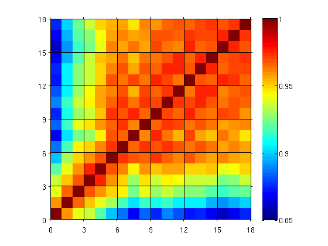

visualiseDrift
function im=visualiseDrift(data,im,reg)
Contents
Purpose
Plot correlation coefficient between all pairs of frames so we can see where % is a stretch of stable repeats.
Inputs
- If im is a 3-D image array then the correlation coefficients across frames (z) are calculated. im can also be a string, instructing the function which image data to extact. By default it's "mean" which causes it to use data.info.muStack, which is the average of the whole stack. This is stored to disk and so is faster. It can also be "baseline", which takes longer to build as the baseline frames need to be extracted from disk. So "mean" is default. im can also be a matrix where the 3rd dimension is equal to length(data).
- reg is which registration to show. by default it's the last registration. If raw data are commited to disk then this may not be an option (there will be only one depth)
Examples
1. Plot the registered data
cd ~/work/Matlab_Scripts/ImagingAnalysis/examples/ load KCexample.mat visualiseDrift(data) set(gca,'CLim',[0.85,1])
The above plot shows the correlation coefficients of the mean images from all trials. In the above case there were 18 trials. The correlation coefficients are generally above 0.9 which, in our exeperience, suggests the data exhibit little drift
2. Plot the un-registered data
visualiseDrift(data,[],1)
set(gca,'CLim',[0.85,1])
 The correlation coefficients are now a little lower, but the pattern has changed very little.